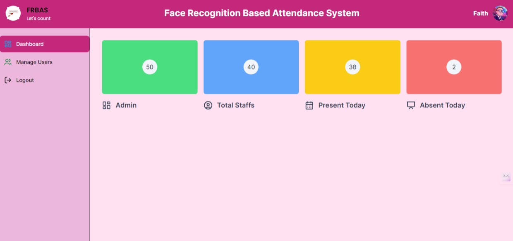

Real-time Face Detection
Our system identifies individuals instantly, making the attendance recording process fast and effortless.
Revolutionizing Attendance Management with Cutting-Edge Face Recognition Technology
 Get started
Our system identifies individuals instantly, making the attendance recording process fast and effortless.

FRBAS fits perfectly into your existing workflow, complementing your operational ecosystem without the need for complex setups.

Security is paramount; our system ensures your data is encrypted, stored, and managed with the highest security standards.
Driven by a desire to innovate the way educational institutions record attendance, FRBAS was conceived as a robust, user-friendly solution for accurate, secure, and time-efficient student tracking.
This project is a culmination of my work as a software developer and my journey at Holberton School.
LinkedIn GitHub Twitter Project Repository